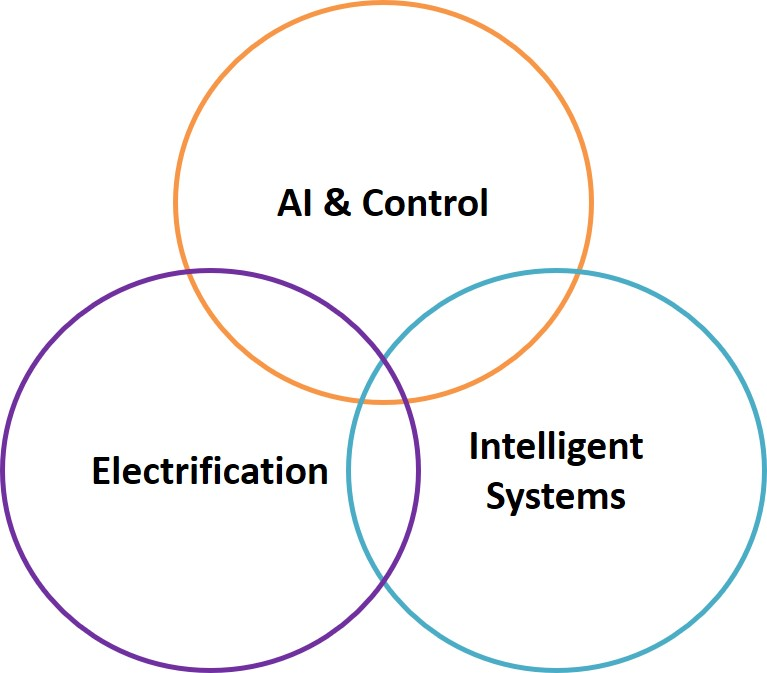

Research OCAI-LabOptimal Control and Artificial Intelligence LabThe Optimal Control and Artificial Intelligence Lab (OCAI-Lab) at Oakland University was established in 2020. The primary research of OCAI-Lab are in the areas of AI-enhanced advanced control and optimization algorithm development with application in automotive and energy systems. The projects involve fundamental research on control theory, optimization, machine learning, and statistics to support cyber-physical systems development including smart energy and transportation systems.Research AreasModel Predictive Control
Artificial Intelligence
Automotive Systems
Energy Systems  |